Publications
First-Author
The Milky Way's thick disc is one of the oldest populations, and its metal-poor, short-lived protoplanetary discs are expected to make planets scarce. We characterised 32 planetary systems around kinematically and chemically confirmed thick disc stars, which brings the known total to 66, and found that a notable fraction are giants on more eccentric orbits than their thin disc counterparts, although detection biases and the small sample size call for caution. We also present two new puffy, low-density giants known around thick disc stars, which is hard to reconcile with billions of years of expected cooling and contraction.
Brown dwarfs (BDs) on tight orbits sit between hot Jupiters and close stellar binaries, and their eccentricities may hold clues about whether they formed where we see them or migrated inwards. Using a hierarchical Bayesian model, we found that BDs with periods below 16 days are concentrated at low eccentricities, whereas long-period ones are noticeably more excited, which is what tidal circularisation processes would produce. Assuming a single primordial distribution for the whole population, this lets us constrain the tidal quality factor of transiting brown dwarfs to roughly 108, or about 107 when tides raised on the host stars are included.
Low-mass stars from the first generation may still be alive today, but accretion and internal mixing processes can pollute their surfaces enough to disguise them as ordinary metal-poor stars. Their interiors, however, are harder to hide, so we computed the oscillations of metal-free red giants and introduced a diagnostic, ψ = Δν/ΔΠ1, that follows how metallicity shapes the star's core. Population III models fall in the distinct region of the ψ–ΔΠ1 plane, and that signature survives moderate surface pollution, which gives future surveys a concrete way to look for relics of the first stars.
Stars below roughly 0.8 solar masses live so long without metals that some could still be around in the Milky Way’s halo or in its satellite dwarf galaxies, yet their evolution has been scarcely mapped in detail. We followed 0.7 to 1 solar-mass models with Modules for Experiments in Stellar Astrophysics (MESA) from the pre-main sequence to the white dwarf phase, varying mass-loss efficiencies, convection schemes and overshooting to test which outcomes are robust. Without metals, these stars are unusually compact, develop no convective envelope on the red giant branch, and their helium flashes ignite off-centre and violently, which sets them apart from even slightly enriched stars. Convective shell mergers then produce nitrogen-rich giants, and in the heavier models short ultraviolet-bright episodes, with effective temperatures of 50,000 to 60,000 K, precede the final white dwarfs of about 0.45 to 0.55 solar masses, which are hotter, more compact and cool faster than their metal-rich analogues. The same flashes and mergers leave sharp bursts of neutrino emission, whilst the carbon, nitrogen and oxygen returned to the surrounding gas is small. Some of these outcomes, such as the shell mergers, depend sensitively on the adopted overshooting and mass-loss prescriptions, so the models are best read as a framework for recognising surviving Population III stars and their descendants.
How a brown dwarf (BD) is oriented relative to its star's spin can reveal whether it formed like a planet or like a small stellar companion, but only a handful have been measured. Using NEID spectra of the Rossiter-McLaughlin effect, we found a sky-projected obliquity of -7°±14° for TOI-2533 b, which makes it the fifth BD with such a measurement. The orbit is consistent with alignment, and with a mass of about 75 Jupiter masses, near the hydrogen-burning limit, the system fits formation by disc fragmentation, although tidal realignment cannot be totally excluded.
Pairs made of a white dwarf and a very low-mass companion usually come from close binaries that interact, so they say little about how each star evolves on its own. VVV J1438-6158 AB is different, as its two components are separated by about 1,200 au, which makes it one of the widest such pairs known. We characterised a 9,500 K white dwarf of about 0.62 solar masses and an M8 ultra-cool dwarf of about 98 Jupiter masses, with such a large mass ratio suggesting a formation pathway closer to that of ordinary stellar binaries.
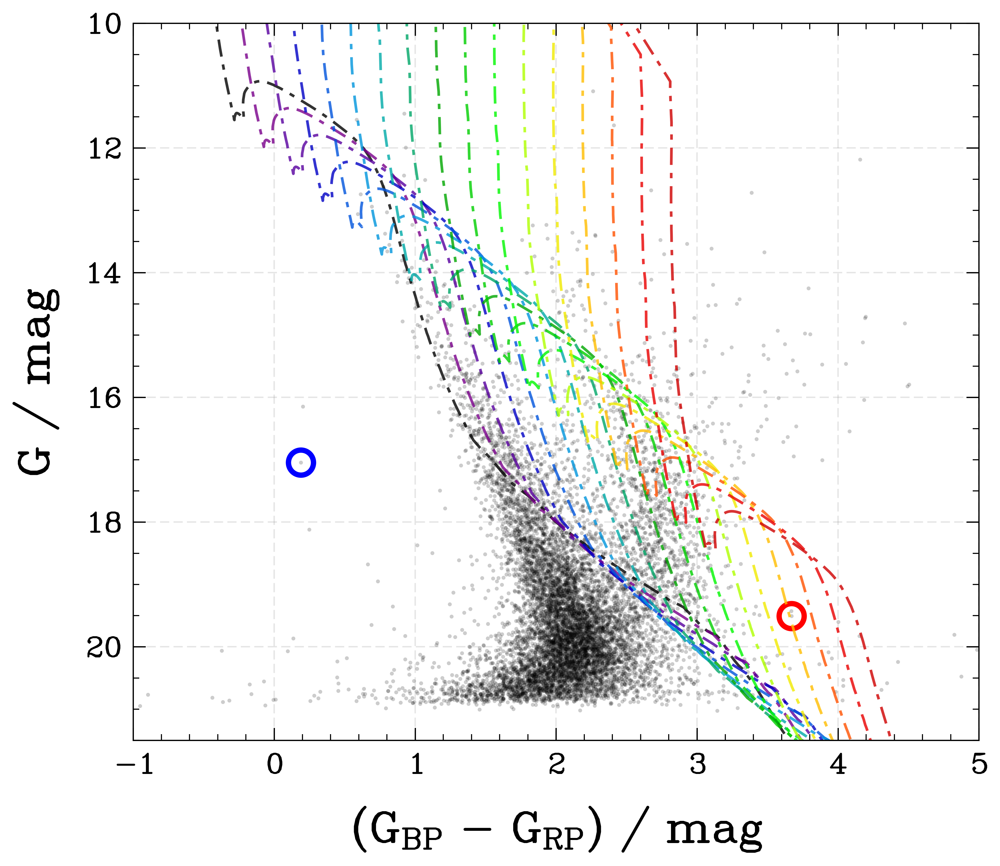
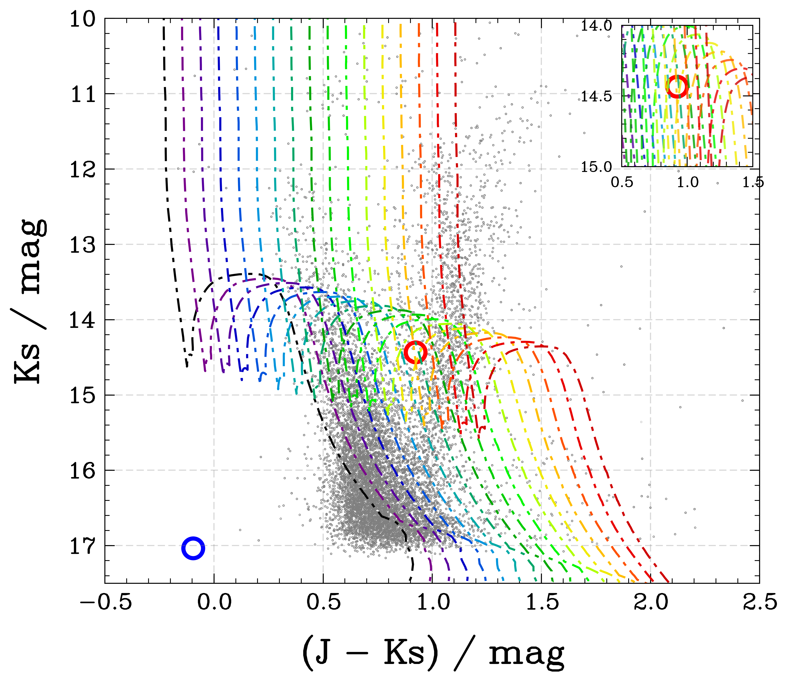
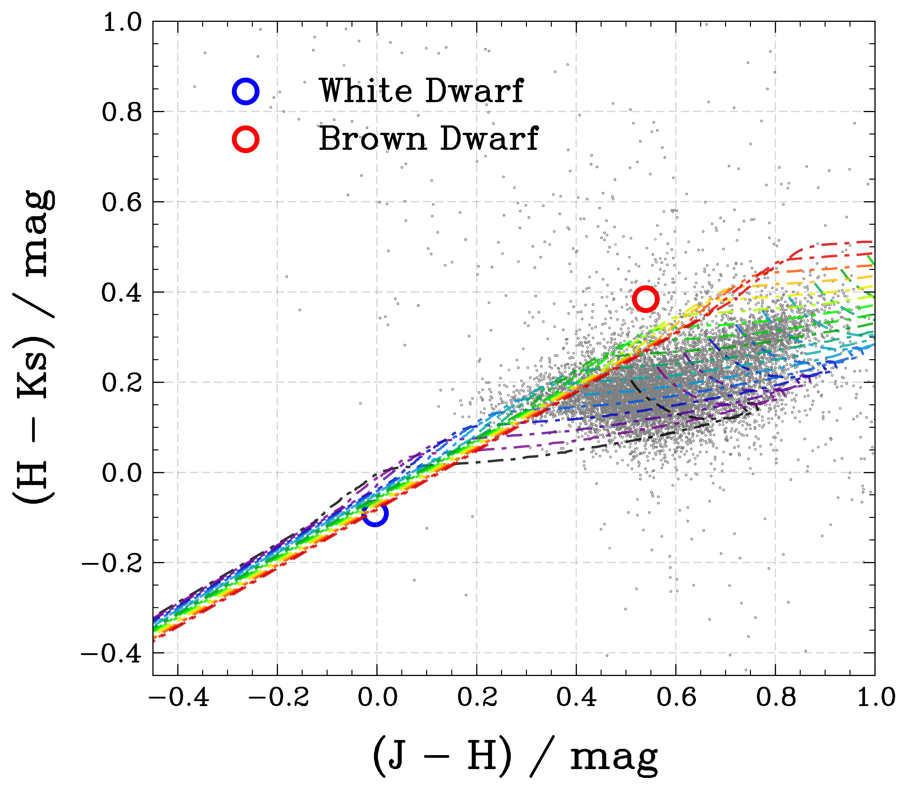
V1309 Sco is the best-studied stellar merger case, first mistaken for a nova in 2008. We used VISTA Variables in the Vía Láctea (VVV) and VVV-X near-infrared data to follow it about ten years after the outburst. The star has settled to a nearly constant brightness, and its colour changed from J-Ks = 1.40 in 2010 to 0.42 in 2015. We also found a possible weak signal with a period of 0.49 days, and together these are consistent with the remnant becoming a blue straggler.
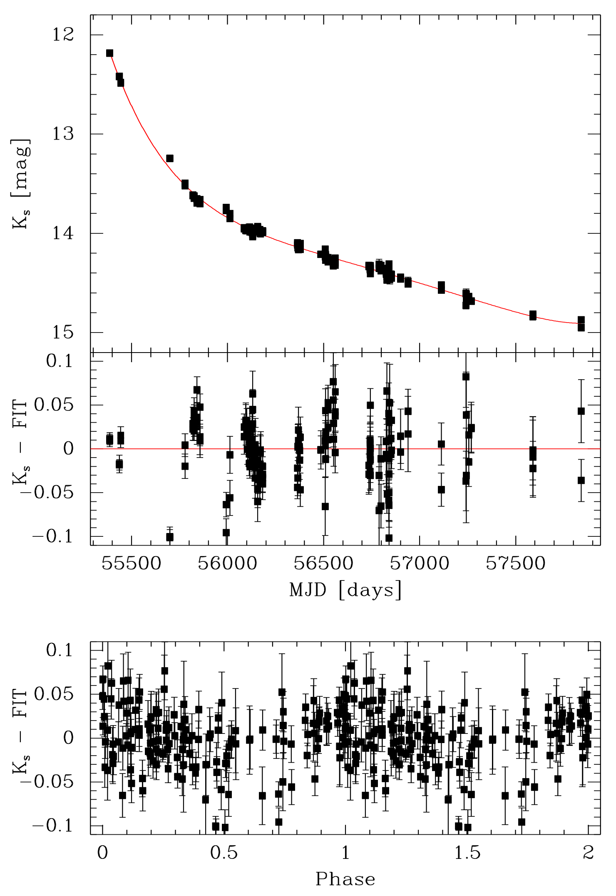
Co-Author
Lithium is destroyed in stellar interiors at fairly low temperatures, so its abundance in Sun-like stars is a sensitive tracer of how much material has been mixed below the convective zone over their lifetimes. Following the discovery of HIP 8522, we searched for similar objects and identified six new solar twins whose lithium abundances are far lower than current non-standard mixing models can explain, suggesting that they form a distinct population with an unusual past. We tested planet engulfment, blue straggler formation, and early episodic accretion, and found that engulfment is viable for only one star, that radial velocities reveal no stellar companion but instead two new exoplanets, and that episodic accretion during the pre-main-sequence phase is the most plausible explanation, pending beryllium measurements for the remaining stars.
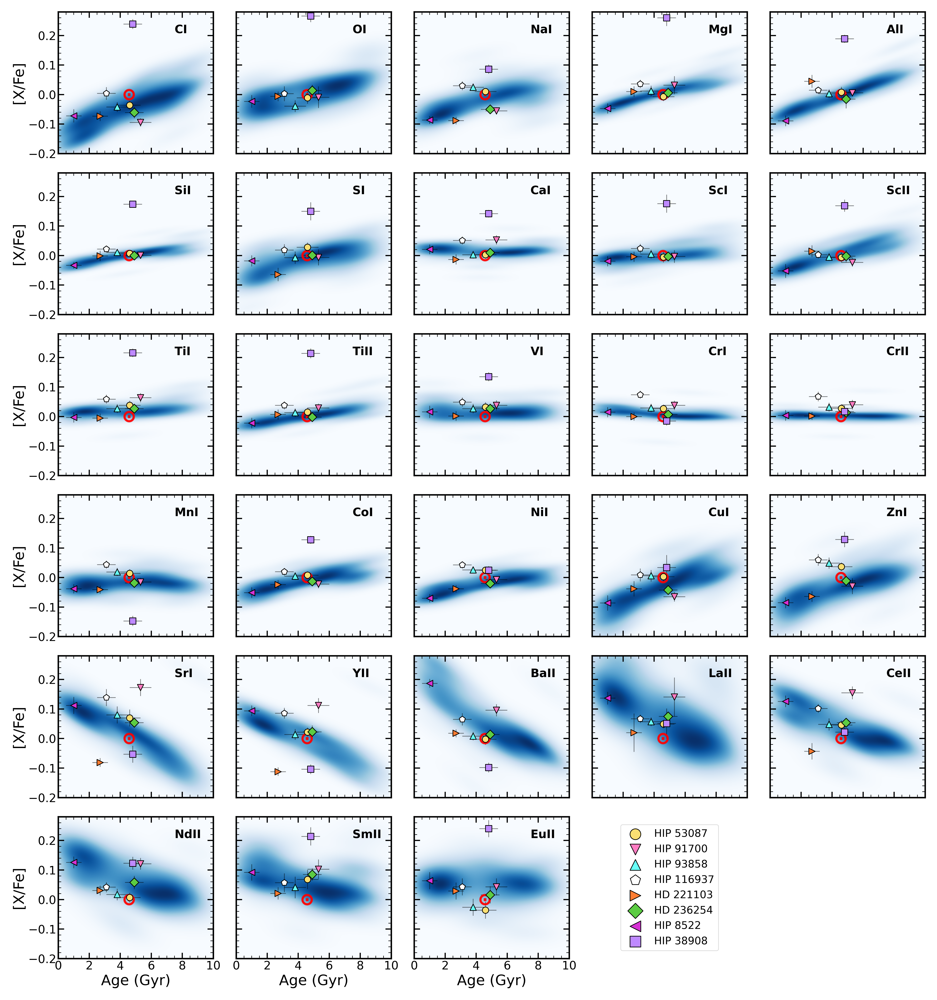
Young solar twins usually retain a considerable amount of lithium, with abundances typically between 2.0 and 3.3 dex, which makes HIP 8522 remarkable since we derived an upper limit of only 0.8 dex for a star younger than about 1 Gyr, meaning that roughly 2 dex of lithium appear to be missing. Using high-resolution spectra, we determined its stellar parameters and chemical composition, and then examined several mechanisms that could destroy lithium, including planet engulfment, substellar mergers, and extra mixing processes, none of which account for the depletion satisfactorily. Two scenarios, however, remain plausible, namely that HIP 8522 is a field blue straggler formed by the merger of a close binary, or that it underwent episodic accretion early in its life, and either possibility makes it a valuable test case for models of internal mixing.
TOI-4562 b is a temperate Jupiter analogue on a 225 day orbit with an eccentricity of 0.76 around a star younger than 700 Myr, so the system is a useful laboratory for studying planetary formation and dynamical evolution before the initial configuration has been altered substantially. We observed a new transit with the 0.6-m Zeiss telescope at the Observatório Pico dos Dias (OPD/LNA) in Minas Gerais, Brazil, and combined it with TESS and archival data to improve the ephemeris, and the resulting timing residuals are consistent with a second giant planet on an outer orbit. This candidate, TOI-4562 c, has a mass of about 5.8 Jupiter masses and a period of roughly 3,990 days, which makes it the longest-period planet found to date through transit timing variations (TTV).
Two stars of a wide binary are expected to share the same chemical composition, so any difference between them may reveal planet formation or engulfment episodes, although these ideas had mostly been tested in pairs without known planets. In TOI-1173 A/B, which have a projected separation of about 11,400 au and where only the primary hosts a planet, we used MAROON-X at Gemini North and ARCES at the Apache Point Observatory spectra to compare the two stars, and found that the planet host is enhanced in refractory elements such as iron by more than 0.05 dex, which is a pattern consistent with the engulfment of about 18 Earth masses of rocky material, and the dynamics described in our companion paper support this picture, since the close-in planet may have migrated inwards and disrupted inner rocky planets in the process.
Puffy planets with masses between 20 and 50 Earth masses are rare, and only a handful have been characterised with both transit and radial velocity observations. We reported TOI-1173 A b, a planet on a 7.06-day nearly circular orbit around the G-dwarf primary of a wide binary, with a mass of 27.4 Earth masses, a radius of 9.19 Earth radii and a density of about 0.2 g cm-3, making it the first puffy super-Neptune known in a wide binary system. Among the mechanisms we explored for its inflated radius, tidal heating is the most promising, and the present architecture of the system suggests that the planet may have migrated through von Zeipel-Lidov-Kozai (vZLK) oscillations followed by tidal circularisation.
The inner Galactic bulge and the southern disc are hidden from optical surveys by dust, which is why the VISTA Variables in the Via Láctea (VVV) survey observed them in the near-infrared, and the VVVX extended this work from 562 to 1,700 square degrees whilst adding new epochs between 2016 and March 2023. This paper describes the observing strategy, the data quality and access, and the legacy of the survey, which provides a JHKs catalogue of more than 1.5 billion point sources and a Ks catalogue of about 10 million variable sources. Combined with distance indicators such as red clump stars, RR Lyrae and Cepheids, these data allowed us to build a five-dimensional map of the surveyed region, and they complement Gaia at low Galactic latitudes whilst providing targets for upcoming spectrographs such as MOONS and 4MOST.
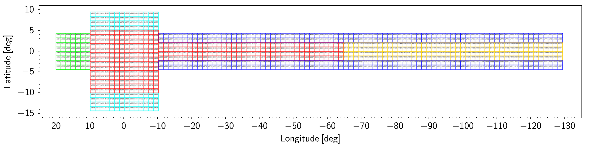
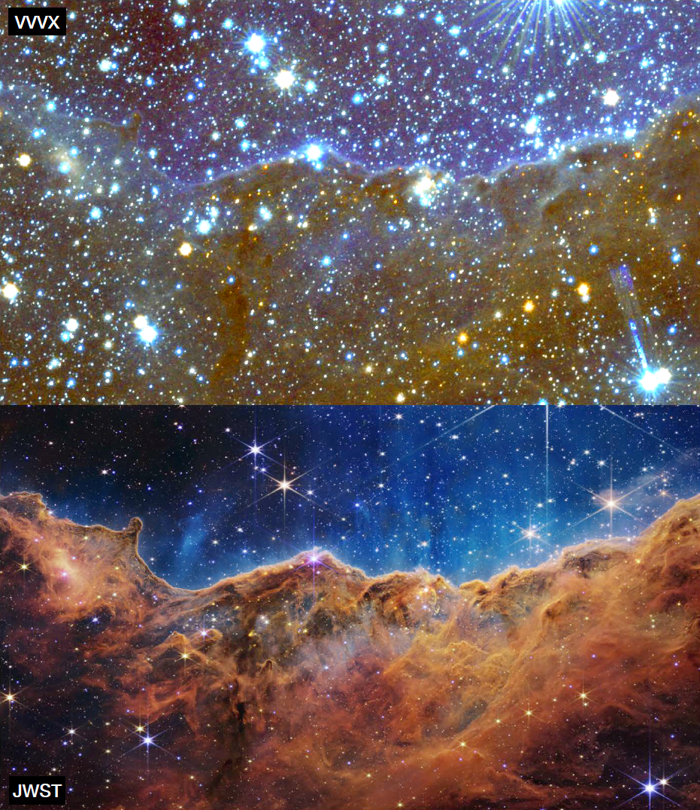
Eclipsing binaries are valuable because they allow the masses and radii of their components, as well as the distance to the system, to be measured directly, and they therefore help to trace the structure of the Milky Way alongside pulsating stars. We developed a semi-automated strategy to search for them in the VVV light curves over 13.4 square degrees of the inner bulge, and we classified 212 previously unknown eclipsing binaries, six of which are very reddened. A preliminary analysis indicates that they are located in the most obscured regions of the foreground disc and the bulge, which makes this search complementary to those carried out at optical wavelengths.
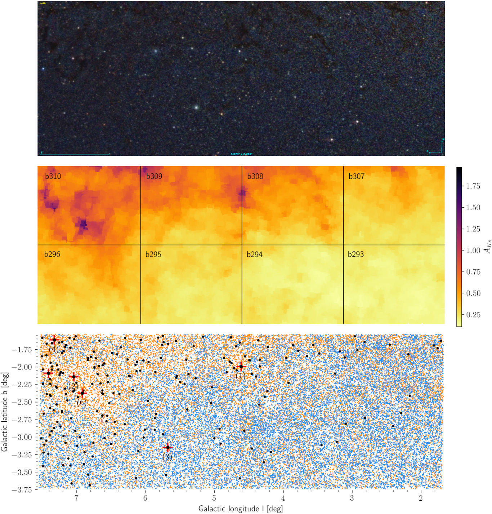
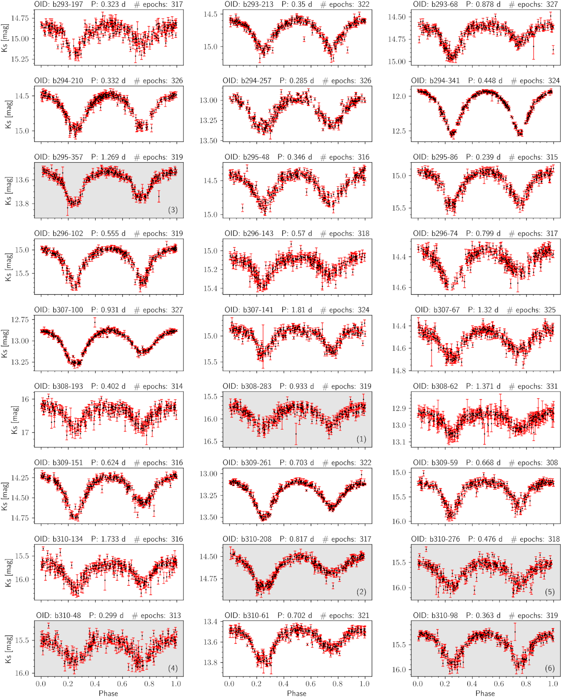
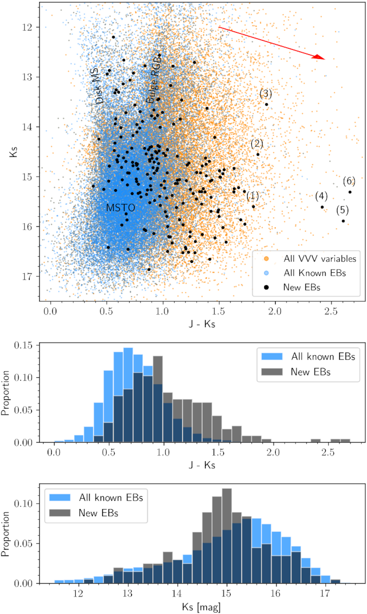
Most of what is known about variable stars in the Galaxy comes from optical observations, which are strongly limited in the crowded and reddened regions of the bulge and the disc. Cross-matches between the VVV survey and the VSX-AAVSO catalogue plus the Gaia DR2 produce a catalogue with coordinates, ZYJHKs magnitudes, extinctions and Gaia-based distances, including for distance indicators such as RR Lyrae, Cepheids and Miras. About 20% of the stars with verified variability are flagged as non-stellar sources, and more than half of our sample is missing from the VVV variability list, which suggests that current knowledge of variability in the Galaxy is biased towards nearby stars with low extinction, and the catalogue provides a groundwork for future surveys such as the Vera C. Rubin Observatory LSST.
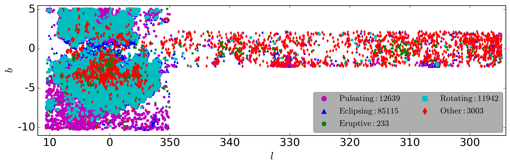
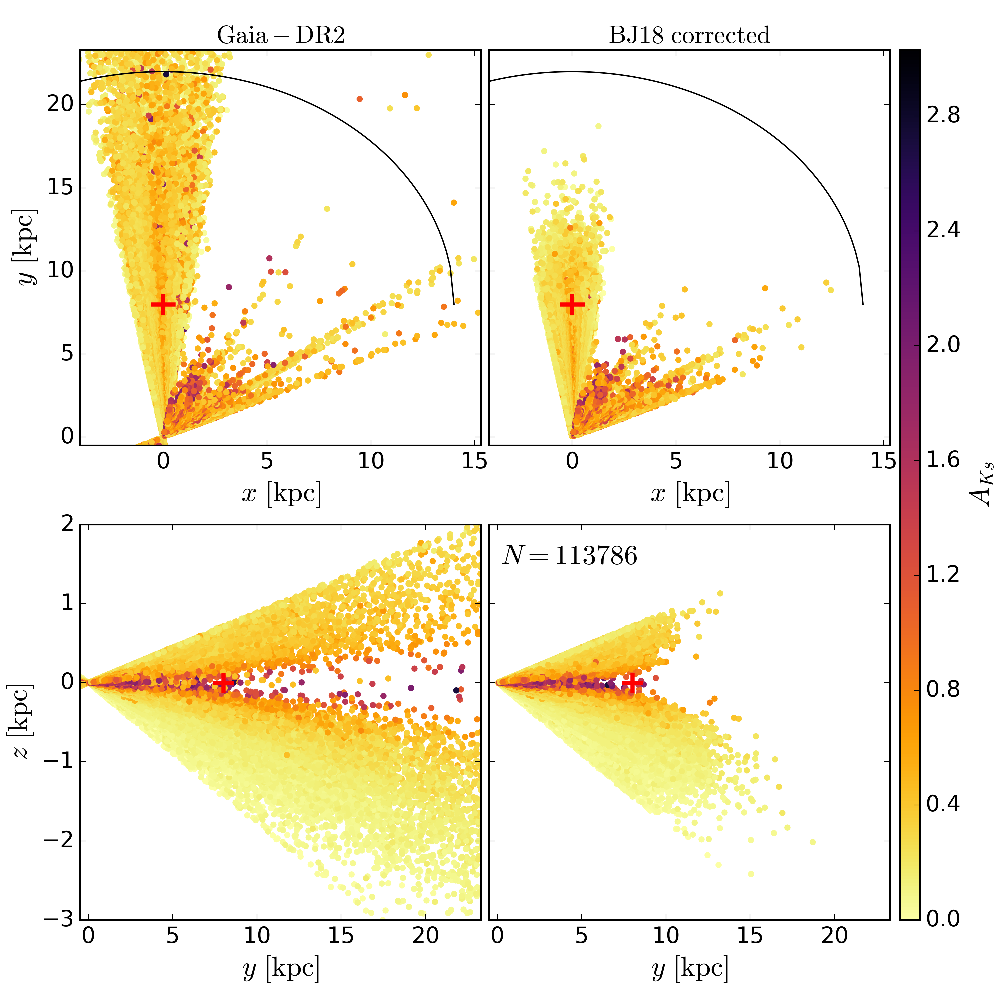
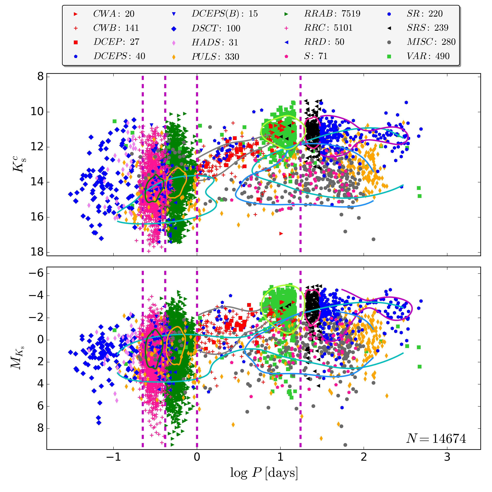